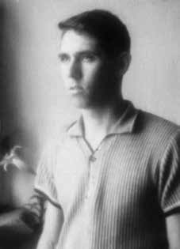

Edu
Barreto
Leite
CIRCUNSTÂNCIAS DA MORTE
Edu Barreto Leite morreu no dia 13 de abril de 1964, em circunstâncias ainda não totalmente esclarecidas. De acordo com a narrativa oficial apresentada pelas forças repressivas do regime militar, Edu Barreto Leite estava sendo procurado pelos órgãos de inteligência por suposto envolvimento com atividades subversivas. Por esse motivo, o então tenente Hilton Paulo Cunha Portella, comandante do Pelotão de Investigações Criminais (PIC) do 1º Batalhão de Polícia do Exército, depois de receber ordens do coronel Olavo Vianna Moog, comandante do 1º Batalhão, determinou a detenção de Edu Barreto Leite para averiguações. Para isso enviou um primeiro grupo de busca ao local de residência de Edu Barreto, na Rua Washington Luís. Depois de algumas horas de buscas sem sucesso, os enviados do primeiro grupo foram substituídos pelos sargentos Raimundo Osterson Nogueira e Sérgio de Azevedo Mazza que, por volta das 19 horas, assumiram a missão de prender Edu Barreto Leite. Ficaram à espera do investigado no corredor que oferecia acesso ao apartamento de Edu, aguardando o seu retorno. Ainda de acordo com a versão oficial, quando ele voltou ao apartamento foi interpelado pelos sargentos, que estavam à sua espera. Supostamente, os dois militares teriam se identificado como Polícia do Exército, responsáveis por conduzi-lo ao quartel da corporação, para que prestasse esclarecimentos sobre alguns fatos. O investigado, contudo, teria oferecido resistência e se engajado em luta corporal com os outros dois sargentos à sua espera. Em seguida, Edu teria sacado sua arma e efetivado quatro disparos contra os militares. Apesar da curtíssima distância, nenhum dos disparos efetuados atingiu os sargentos Osterson e Mazza e, na sequência, aproveitando-se da confusão, Edu Barreto Leite teria atravessado a sala de seu apartamento e se atirado pela janela. De acordo com essa versão, ele deu entrada no Hospital Souza Aguiar apresentando grave quadro de múltiplas fraturas e escoriações, em decorrência da queda da janela do sétimo andar, tendo falecido em virtude de “contusão do tórax e do abdômen”, conforme os termos da certidão de óbito firmada por Amadeu da Silva Sales. A narrativa produzida pelos órgãos de segurança não se sustenta à luz da pesquisa documental realizada a partir dos arquivos da repressão. O primeiro indício de que a versão dos fatos apresentada pelas Forças Armadas é questionável foi produzido pelo próprio Conselho de Segurança Nacional (CSN). No dia 27 de abril de 1964, a secretaria do CSN expediu o Pedido de Busca secreto nº 346, informando no item denominado “dados conhecidos”, “que o Sargento Edu Barreto Leite, residente a Rua Washington Luiz, 51/704, não teria se suicidado”. O pedido solicitava que fossem informados: “a) veracidade”, “b) situação das investigações, tanto militares quanto policiais” e, “c) outros dados julgados úteis”. Foram localizados outros dois documentos pertencentes ao Arquivo do Departamento de Ordem Política e Social da Guanabara (DOPS/GB) que registram as respostas ao Pedido de Busca nº 346. A análise dos documentos revela que, apesar da diferença de dez dias entre os dois documentos, o conteúdo de ambos é praticamente idêntico. É possível verificar que o documento encaminhado ao Conselho de Segurança Nacional, no dia 3 de junho de 1964, consiste em uma revisão da primeira versão, datada de 21 de maio de 1964. Os dois documentos foram assinados, respectivamente, por Cecil de Macedo Borer, diretor do DOPS/GB, e por Antônio Sellitti Rangel, chefe de Seção na Secretaria de Segurança Pública do antigo Estado da Guanabara. O documento encaminhado ao Conselho de Segurança Nacional no dia 3 de junho de 1964 registra a narrativa oficial sobre a morte de Edu Barreto, que corresponde à versão divulgada à época dos fatos. O texto informa que: […] realmente, o 3º sargento do Exército, Edu Barreto Leite, brasileiro, solteiro, com 23 anos de idade, residente na rua Washington Luiz, 51, apartamento 704, se suicidou na noite do dia 14 de abril do ano em curso, atirando-se de seu apartamento, ocorrência que foi registrada sob o nº 590 no 5º Distrito Policial (….) segundo consta, as suspeitas de que o morto estivesse envolvido com atividades subversivas foram decorrentes de se encontrar servindo na Estação de Rádio-Comunicações do Ministério da Guerra, podendo receber ou transmitir, a seu talento, informes clandestinos. Sobre a ocorrência foi aberto inquérito pelas autoridades do Exército, limitando-se o 5º Distrito Policial, em considerando as circunstâncias do evento, a um simples registro do ocorrido. Finalmente, no que diz respeito a atividades clandestinas ou subversivas do desaparecido, só as autoridades militares podem manifestar-se, pois às mesmas, e na órbita militar, ficou restrito o caso, existindo mesmo, como acima já foi dito, um inquérito em curso, a cujo término haverá naturalmente elementos de convicção para um juízo e apreciação final. A partir das informações encontradas nos documentos mencionados, a Comissão Nacional da Verdade analisou o Inquérito Policial Militar (IPM) instaurado com o intuito de investigar o caso no âmbito da Justiça Militar, tendo como encarregado o 1º tenente Murillo Ribeiro Flôres. O IPM conta com um conjunto de depoimentos e laudos produzidos à época. Foram ouvidos os dois sargentos presentes no momento em que Edu supostamente teria se atirado pela janela do apartamento, além de testemunhas que moravam na região. Somaram-se a esses depoimentos as informações prestadas pelos dois sargentos que haviam recebido, primeiramente, a ordem de prender Edu e o depoimento do comandante do 1º Batalhão de Polícia do Exército. Além dos depoimentos, o IPM contém o laudo de lesão corporal dos sargentos Raimundo Osterson Nogueira e Sérgio de Azevedo Mazza, assim como o laudo de perícia realizada em suas respectivas armas e na arma que teria sido utilizada por Edu Barreto para os quatro disparos que supostamente realizou. Não há, contudo, laudo de perícia do local onde ocorreram os fatos, o que implicou na ausência de análise pericial do apartamento acerca dos quatro tiros que teriam sido disparados por Edu Barreto durante o confronto. No tocante à seleção das testemunhas ouvidas, os responsáveis pelo IPM não colheram o depoimento das pessoas com quem Danton Barreto Leite, irmão de Edu, havia falado nos primeiros dias que se seguiram ao ocorrido e que deram outra versão para a morte do sargento Edu Barreto. Entre esses depoimentos divergentes, há, inclusive, a afirmação direta de que Edu teria sido jogado da janela do apartamento. Deixaram de ser ouvidos o zelador do prédio, vizinhos, a noiva de Edu, os militares que acompanharam o irmão de Edu na visita ao apartamento após o ocorrido, e os colegas de unidade de Edu Barreto Leite. Em que pese o IPM não ter fornecido subsídios suficientes para esclarecer o caso, o procurador-geral da Justiça Militar concluiu que a culpa pelos fatos ocorridos foi da vítima. Nas suas palavras: […] no caso em apreço quem poderia ser responsabilizado por ato delituoso, morreu, atirando-se de uma janela, sem interferência de qualquer pessoa. Os dois militares que pretendiam desarmar e prender aquele que se tornou suicida, foram pelo mesmo agredidos à bala, sem que hajam revidado à agressão. São, pois, ofendidos e não ofensores. As pesquisas da Comissão Nacional da Verdade não localizaram novos documentos que permitam elucidar definitivamente as circunstâncias da morte de Edu Barreto Leite. A despeito disso, as investigações realizadas revelaram indícios que apontam a falsidade da versão divulgada à época dos fatos pelo Exército Brasileiro. A análise dos documentos e das demais evidências levantadas permite afirmar que Edu Barreto Leite morreu em decorrência da ação de agentes do Estado brasileiro. Seus restos mortais foram enterrados no Cemitério São Francisco Xavier, no Rio de Janeiro.
Edu Barreto Leite died on April 13, 1964, under circumstances that have not yet been fully clarified. According to the official narrative presented by the repressive forces of the military regime, Edu Barreto Leite was being sought by intelligence agencies for alleged involvement in subversive activities. For this reason, then Lieutenant Hilton Paulo Cunha Portella, commander of the Criminal Investigations Platoon (PIC) of the 1st Army Police Battalion, after receiving orders from Colonel Olavo Vianna Moog, commander of the 1st Battalion, ordered the detention of Edu Barreto Leite for investigations. To this end, he sent a first search group to Edu Barreto's place of residence, on Washington Luís Street. After a few hours of unsuccessful searches, the first group's envoys were replaced by sergeants Raimundo Osterson Nogueira and Sérgio de Azevedo Mazza who, at around 7 pm, took on the mission of arresting Edu Barreto Leite. They waited for the person under investigation in the corridor that provided access to Edu's apartment, awaiting his return. Still according to the official version, when he returned to the apartment he was questioned by the sergeants, who were waiting for him. Supposedly, the two soldiers had identified themselves as Army Police, responsible for taking him to the corporation's barracks, so that he could provide clarification on some facts. The suspect, however, offered resistance and engaged in a physical fight with the other two sergeants waiting for him. Then, Edu allegedly took out his gun and fired four shots at the soldiers. Despite the very short distance, none of the shots fired hit Sergeants Osterson and Mazza and, subsequently, taking advantage of the confusion, Edu Barreto Leite allegedly crossed the living room of his apartment and threw himself through the window. According to this version, he was admitted to Hospital Souza Aguiar with a serious condition of multiple fractures and abrasions, as a result of falling from the window on the seventh floor, having died due to “contusion of the chest and abdomen”, according to the terms of the death certificate signed by Amadeu da Silva Sales. The narrative produced by security agencies does not hold up in the light of documentary research carried out from repression archives. The first indication that the version of events presented by the Armed Forces is questionable was produced by the National Security Council (CSN) itself. On April 27, 1964, the CSN secretariat issued secret Search Request No. 346, stating in the item called “known data”, “that Sergeant Edu Barreto Leite, resident at Rua Washington Luiz, 51/704, did not commit suicide”. The request requested that they be informed: “a) veracity”, “b) status of investigations, both military and police” and, “c) other data deemed useful”. Two other documents were located belonging to the Archive of the Department of Political and Social Order of Guanabara (DOPS/GB) that record the responses to Search Request No. 346. Analysis of the documents reveals that, despite the difference of ten days between the two documents, the content of both is practically identical. It is possible to verify that the document sent to the National Security Council, on June 3, 1964, consists of a revision of the first version, dated May 21, 1964. The two documents were signed, respectively, by Cecil de Macedo Borer, director of DOPS/GB, and by Antônio Sellitti Rangel, head of Section in the Public Security Secretariat of the former State of Guanabara. The document sent to the National Security Council on June 3, 1964 records the official narrative about Edu Barreto's death, which corresponds to the version released at the time of the events. The text informs that: […] in fact, the 3rd Sergeant of the Army, Edu Barreto Leite, Brazilian, single, 23 years old, residing at Rua Washington Luiz, 51, apartment 704, committed suicide on the night of April 14th of the current year, throwing himself from his apartment, an incident that was registered under nº 590 in the 5th Police District (….) according to reports, the suspicions that the deceased was involved in subversive activities were the result of being serving at the Radio Communications Station of the Ministry of War, being able to receive or transmit, at his discretion, clandestine reports. An investigation was opened into the incident by the Army authorities, with the 5th Police District limiting itself, considering the circumstances of the event, to a simple recording of what happened. Finally, with regard to clandestine or subversive activities of the disappeared person, only the military authorities can speak out, as the case was restricted to them, and in the military sphere, and there is even, as already stated above, an ongoing investigation, at the end of which there will naturally be elements of conviction for a final judgment and assessment. Based on the information found in the aforementioned documents, the National Truth Commission analyzed the Military Police Inquiry (IPM) established with the aim of investigating the case within the scope of Military Justice, with 1st Lieutenant Murillo Ribeiro Flôres in charge. The IPM has a set of testimonies and reports produced at the time. The two sergeants present at the time Edu allegedly threw himself through the apartment window were heard, as well as witnesses who lived in the region. Added to these statements was the information provided by the two sergeants who had first received the order to arrest Edu and the testimony of the commander of the 1st Army Police Battalion. In addition to the statements, the IPM contains the report on the bodily injury of sergeants Raimundo Osterson Nogueira and Sérgio de Azevedo Mazza, as well as the expert report carried out on their respective weapons and on the weapon that was allegedly used by Edu Barreto for the four shots he allegedly fired. However, there is no expert report on the place where the events occurred, which resulted in the absence of an expert analysis of the apartment regarding the four shots that were reportedly fired by Edu Barreto during the confrontation. Regarding the selection of witnesses heard, those responsible for the IPM did not take the testimony of the people with whom Danton Barreto Leite, Edu's brother, had spoken in the first days following the incident and who gave another version of Sergeant Edu Barreto's death. Among these divergent statements, there is even the direct statement that Edu had been thrown from the apartment window. The building's caretaker, neighbors, Edu's fiancée, the soldiers who accompanied Edu's brother on the visit to the apartment after the incident, and Edu Barreto Leite's unit colleagues were no longer heard. Despite the IPM not having provided sufficient information to clarify the case, the Attorney General of Military Justice concluded that the victim was to blame for the events that occurred. In his words: […] in the case in question, whoever could be held responsible for a criminal act died by throwing himself out of a window, without any interference from anyone. The two soldiers who intended to disarm and arrest the man who became suicidal were shot by the same man, without having retaliated against the attack. They are, therefore, offended and not offenders. Research by the National Truth Commission did not locate new documents that could definitively elucidate the circumstances of Edu Barreto Leite's death. Despite this, the investigations carried out revealed evidence that points to the falsity of the version released at the time of the events by the Brazilian Army. Analysis of the documents and other evidence collected allows us to affirm that Edu Barreto Leite died as a result of the actions of agents of the Brazilian State. His remains were buried in the São Francisco Xavier Cemetery, in Rio de Janeiro.
Edu Barreto Leite falleció el 13 de abril de 1964, en circunstancias que aún no han sido completamente esclarecidas. Según la narrativa oficial presentada por las fuerzas represivas del régimen militar, Edu Barreto Leite estaría siendo buscado por organismos de inteligencia por presunta participación en actividades subversivas. Por ese motivo, el entonces teniente Hilton Paulo Cunha Portella, comandante de la Sección de Investigaciones Criminales (PIC) del 1.er Batallón de Policía del Ejército, luego de recibir órdenes del coronel Olavo Vianna Moog, comandante del 1.er Batallón, ordenó la detención de Edu Barreto Leite para investigaciones. Para ello envió un primer grupo de búsqueda al lugar de residencia de Edu Barreto, en la calle Washington Luís. Después de algunas horas de búsquedas infructuosas, los enviados del primer grupo fueron sustituidos por los sargentos Raimundo Osterson Nogueira y Sérgio de Azevedo Mazza quienes, hacia las 19 horas, asumieron la misión de detener a Edu Barreto Leite. Esperaron al investigado en el pasillo que daba acceso al apartamento de Edu, esperando su regreso. Aún según la versión oficial, cuando regresó al apartamento fue interrogado por los sargentos, que lo esperaban. Supuestamente, los dos militares se habrían identificado como Policías del Ejército, encargados de trasladarlo al cuartel de la corporación, para que brindara esclarecimientos sobre algunos hechos. El sospechoso, sin embargo, ofreció resistencia y se peleó físicamente con los otros dos sargentos que lo esperaban. Luego, Edu supuestamente sacó su arma y disparó cuatro tiros contra los soldados. A pesar de la muy corta distancia, ninguno de los disparos alcanzó a los sargentos Osterson y Mazza y, posteriormente, aprovechando la confusión, Edu Barreto Leite presuntamente cruzó el living de su departamento y se arrojó por la ventana. Según esa versión, ingresó en el Hospital Souza Aguiar en estado grave de múltiples fracturas y abrasiones, como consecuencia de una caída desde una ventana del séptimo piso, habiendo fallecido a causa de “contusión en tórax y abdomen”, según los términos del certificado de defunción firmado por Amadeu da Silva Sales. La narrativa producida por los organismos de seguridad no se sostiene a la luz de la investigación documental realizada a partir de archivos de la represión. El primer indicio de que la versión de los hechos presentada por las Fuerzas Armadas es cuestionable fue producido por el propio Consejo de Seguridad Nacional (CSN). El 27 de abril de 1964, la secretaría del CSN emitió la Solicitud de Búsqueda secreta N° 346, indicando en el ítem denominado “datos conocidos”, “que el sargento Edu Barreto Leite, residente en Rua Washington Luiz, 51/704, no se suicidó”. La solicitud solicitó que se les informe: “a) veracidad”, “b) estado de las investigaciones, tanto militares como policiales” y, “c) otros datos que se consideren útiles”. Se localizaron otros dos documentos pertenecientes al Archivo del Departamento de Orden Político y Social de Guanabara (DOPS/GB) que registran las respuestas a la Solicitud de Búsqueda No. 346. El análisis de los documentos revela que, a pesar de la diferencia de diez días entre ambos documentos, el contenido de ambos es prácticamente idéntico. Se puede comprobar que el documento enviado al Consejo de Seguridad Nacional, el 3 de junio de 1964, consiste en una revisión de la primera versión, de fecha 21 de mayo de 1964. Los dos documentos fueron firmados, respectivamente, por Cecil de Macedo Borer, director del DOPS/GB, y por Antônio Sellitti Rangel, jefe de Sección de la Secretaría de Seguridad Pública del antiguo Estado de Guanabara. El documento enviado al Consejo de Seguridad Nacional el 3 de junio de 1964 registra la versión oficial sobre la muerte de Edu Barreto, que corresponde a la versión difundida al momento de los hechos. El texto informa que: […] en efecto, el Sargento 3º del Ejército, Edu Barreto Leite, brasileño, soltero, 23 años, con domicilio en Rua Washington Luiz, 51, departamento 704, se suicidó la noche del 14 de abril del año en curso, arrojándose desde su departamento, hecho que fue registrado bajo el nº 590 del 5º Distrito Policial (….) según lo informado, las sospechas de que el occiso estaba involucrado en actividades subversivas fueron el resultado de estar prestando servicios en la Estación de Radiocomunicaciones del Ministerio de la Guerra, pudiendo recibir o transmitir, a su discreción, informes clandestinos. Sobre el incidente fue abierta una investigación por parte de las autoridades del Ejército, limitándose el Distrito 5 de Policía, considerando las circunstancias del hecho, a una simple grabación de lo sucedido. Finalmente, respecto de las actividades clandestinas o subversivas de la persona desaparecida, sólo pueden pronunciarse las autoridades militares, ya que el caso estaba restringido a ellas, y en el ámbito militar, e incluso hay, como ya se dijo anteriormente, una investigación en curso, al final de la cual naturalmente habrá elementos de convicción para una sentencia y valoración definitiva. Con base en la información encontrada en los documentos mencionados, la Comisión Nacional de la Verdad analizó la Investigación de la Policía Militar (IPM) instaurada con el objetivo de investigar el caso en el ámbito de la Justicia Militar, a cargo del teniente primero Murillo Ribeiro Flôres. El IPM cuenta con un conjunto de testimonios e informes elaborados en su momento. Se escuchó a los dos sargentos presentes en el momento en que Edu supuestamente se arrojó por la ventana del apartamento, así como a testigos que vivían en la región. A estas declaraciones se sumó la información proporcionada por los dos sargentos que habían recibido por primera vez la orden de arrestar a Edu y el testimonio del comandante del 1er Batallón de Policía del Ejército. Además de las declaraciones, el IPM contiene el informe sobre las lesiones corporales de los sargentos Raimundo Osterson Nogueira y Sérgio de Azevedo Mazza, así como el peritaje realizado sobre sus respectivas armas y sobre el arma que presuntamente utilizó Edu Barreto para los cuatro disparos que presuntamente realizó. Sin embargo, no existe un peritaje sobre el lugar donde ocurrieron los hechos, lo que resultó en la ausencia de un peritaje del departamento respecto de los cuatro disparos que habría realizado Edu Barreto durante el enfrentamiento. Respecto a la selección de los testigos escuchados, los responsables del IPM no tomaron el testimonio de las personas con quienes Danton Barreto Leite, hermano de Edu, había hablado en los primeros días después del incidente y quienes dieron otra versión sobre la muerte del sargento Edu Barreto. Entre estas declaraciones divergentes, está incluso la afirmación directa de que Edu había sido arrojado por la ventana del apartamento. El conserje del edificio, los vecinos, la prometida de Edu, los militares que acompañaron al hermano de Edu en la visita al departamento después del incidente y los compañeros de unidad de Edu Barreto Leite ya no fueron escuchados. A pesar de que el IPM no había aportado información suficiente para esclarecer el caso, la Procuraduría General de Justicia Militar concluyó que la víctima era culpable de los hechos ocurridos. En sus palabras: […] en el caso que nos ocupa, quien pudiera ser considerado responsable de un hecho delictivo murió arrojándose por una ventana, sin intervención de nadie. Los dos militares que pretendían desarmar y detener al hombre que se había suicidado fueron fusilados por el mismo hombre, sin haber tomado represalias contra el ataque. Son, por tanto, ofendidos y no infractores. La investigación de la Comisión Nacional de la Verdad no localizó nuevos documentos que pudieran esclarecer definitivamente las circunstancias de la muerte de Edu Barreto Leite. Pese a ello, las investigaciones realizadas revelaron indicios que apuntan a la falsedad de la versión difundida en el momento de los hechos por el Ejército brasileño. El análisis de los documentos y otras pruebas recolectadas permite afirmar que Edu Barreto Leite murió como resultado de la actuación de agentes del Estado brasileño. Sus restos fueron enterrados en el Cementerio São Francisco Xavier, en Río de Janeiro.